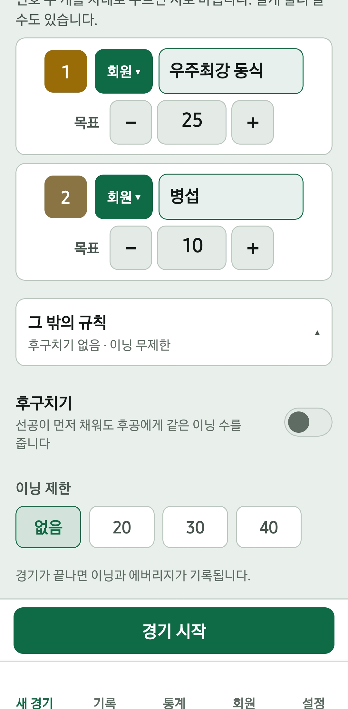

동호회마다 규칙이 조금씩 다릅니다. 에버보드는 새 경기를 시작할 때 우리 모임 규칙을 고르고, 같은 규칙의 기록끼리 통계를 모읍니다.
에버보드에서 고를 수 있는 규칙
| 규칙 | 선택지 | 쓸 수 있는 경기 |
|---|---|---|
| 초구 수구 | 노랑 · 흰공 | 2인 이상 |
| 뱅크샷 득점 | 1점 · 2점 | 3쿠션 |
| 후구치기 | 켜기 · 끄기 | 3쿠션 2인 개인전 |
| 무승부 처리 | 무승부 인정 · 승부치기 | 후구치기를 켠 경기 |
| 턴 타이머 | 끄기 · 33초 · 40초 · 60초 · 직접 입력 | 3쿠션 |
| 마무리 규칙 | 3쿠션 · 뱅크샷 각각 없음~3개 | 4구 |
| 이닝 제한 | 없음 · 20 · 30 · 40이닝 | 전체 |
목표점은 얼마로 시작하나요?
3쿠션은 20점, 4구(사구)는 200점에서 시작합니다. 3쿠션은 5~99점, 4구는 10점 단위로 10~990점까지 정할 수 있고, 선수마다 목표점을 다르게 둘 수 있습니다. 내 핸디를 어떻게 정할지 궁금하다면 3쿠션 핸디 정하는 법을 참고하세요.
이닝은 어떻게 세나요?
이닝은 그 사람이 큐를 잡은 횟수입니다. 미스로 끝나든 목표점을 채워 끝나든, 한 차례가 끝나면 1이닝입니다. 마지막 이닝을 빼면 에버리지가 실제보다 높게 나오므로 에버보드는 마지막 이닝까지 셉니다.
뱅크샷은 1점인가요, 2점인가요?
모임 규칙에 맞춰 고르면 됩니다. 프로당구(PBA) 룰은 2점이고, 1점으로 세는 동호회도 많습니다. 2점제는 같은 실력이라도 에버리지가 높게 나오므로, 에버보드는 1점제와 2점제의 통계를 따로 모읍니다.
초구 수구도 같은 화면에서 고릅니다. 초구를 잡는 사람이 쓰는 공이며, 고르면 1번·2번 자리 색이 바뀝니다.

후구치기와 승부치기
후구치기
선공이 먼저 목표점을 채워도 후공에게 같은 이닝 수를 주는 규칙입니다. 3쿠션 2인 개인전에서 쓸 수 있습니다.
승부치기
후구치기로 같은 이닝에 둘 다 끝났을 때 무승부로 인정할지, 승부치기를 할지 미리 고릅니다. 승부치기는 한 이닝씩 더 쳐서 득점이 갈리는 이닝에 승부를 냅니다. 승부치기의 득점과 이닝은 정규 경기 점수와 에버리지에 더해지지 않으며, 기록에는 몇 라운드 만에 갈렸는지 함께 남습니다.

턴 타이머(샷클락)
한 차례의 시간을 재는 기능으로 3쿠션에서 씁니다. 기본값은 40초이고 끄기, 33초, 60초를 고르거나 직접 입력할 수 있습니다. 시간이 다 되면 알려 주지만 턴을 자동으로 넘기지는 않으므로, 넘길지는 함께 치는 사람들이 정합니다.
4구 마무리 규칙
4구에서 목표점을 채운 뒤 3쿠션이나 뱅크샷을 몇 개 더 넣어야 끝나는 규칙입니다. 3쿠션과 뱅크샷을 각각 없음, 1개, 2개, 3개 중에서 고르고, 둘 다 없음이면 목표점을 채우는 순간 끝납니다.
이닝 제한과 복식
이닝 제한을 20, 30, 40이닝으로 정하면 시간이 정해진 모임에서도 경기를 끝낼 수 있습니다. 2:2 복식은 인원을 4명으로 고른 뒤 설정하며, 후구치기와 승부치기는 쓸 수 없습니다.
경기 시작 순서 보기